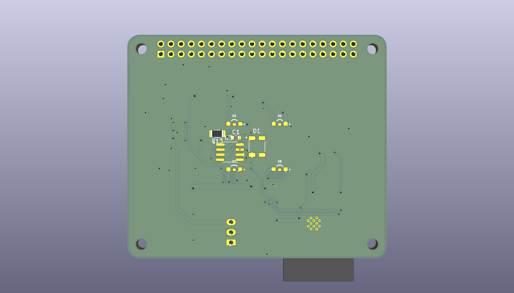

Best Entrepreneurship · evidence map
How our work addresses Best Entrepreneurship
Five ballot questions, five short answers, and direct links to the sections where the underlying evidence will live. Essential conclusions stay on the page — not only in tooltips or animation.
-
~30 seconds
Read the hero facts and the five cards below: problem, customer, product form, and current evidence status.
-
~5 minutes
Walk beachhead → MVP → business model → go-to-market → risks for the commercialization path.
-
Deep read
Expand source notes, BMC, financing scenario, risk filters, and references — progressive disclosure for detail, not for core claims.
-
01 · First customer
Who needs this?
Who has the unmet need, who would use the device, and who would pay?
Candidate beachhead: banana export QC in Taiwan; validation channel via agricultural institutions. Direct exporter interviews remain a documented gap. No paying first customer is claimed.
-
02 · Solution
Possible & inventive?
Is the solution possible, scalable, and inventive — with evidence, not slogans?
Modular live-receptor cartridge + ESP32 FDM/DLIA reader + neuromorphic classification. Architecture designed; experimental validation pending.
-
03 · Plan
Development path
Is there a logical product plan with milestones, resources, and risks?
Phased GTM (Validate → Pilot → Scale), seven development gates, filterable risks, and illustrative financials are published with status labels. Calendars still need team confirmation.
-
04 · Capabilities
Who can build it?
What skills, stakeholders, and partners are required to develop the solution credibly?
Capability matrix published: wet/dry/hardware strengths; manufacturing, regulatory, IP, and exporter sales still explicit gaps. Advisors Lo/Charng confirmed; FITI/Garage+ mentorship confirmed.
-
05 · Impacts
Long-term effects
What positive and negative long-term impacts must be managed?
Balanced impact section: earlier screening aims vs false-negative overtrust, cartridge waste, data governance, and unequal access — with design/governance responses and Sustainability/Safety links. SDGs are secondary framing only.
Interactive strategy atlas
Explore the business logic.
Select any labeled area to open its explanation and source section. These diagrams summarize the current page; they do not add validation evidence. Exit-barrier questions are proposed additions for team review.
Golden Circle
Why → How → WhatSelect a region to explore its meaning and evidence.
Why
Help operators decide which stored-food batches need a closer look before visible signs become the only trigger. The application and willingness to pay still need buyer-side validation.
Read the evidence and limitations →How
Combine engineered olfactory receptors, weak-fluorescence readout, and fly-inspired pattern decoding. Integrated live-cell screening performance is not yet demonstrated.
Read the evidence and limitations →What
A proposed cartridge + reader + analysis system for screening and follow-up decisions. The current hardware record describes an ESP32-standalone architecture.
Read the evidence and limitations →Design Thinking
A loop of decisionsSelect a region to explore its meaning and evidence.
01 · Empathize
Agricultural and analytical interviews, mentor reviews, and a public survey informed the problem. Public respondents do not substitute for the intended buyer.
Read the evidence and limitations →02 · Define
Mentor feedback narrowed the beachhead from a broad crop platform to banana export workflows; direct packing-house evidence remains a decision gate.
Read the evidence and limitations →03 · Ideate
Position AeroSense as a screening layer that complements confirmatory laboratories. Compare alternatives by workflow fit and the decision they support.
Read the evidence and limitations →04 · Prototype
The current repository contains design and CAD records. Fabricated-reader performance and living-cell sensing remain to be validated.
Read the evidence and limitations →05 · Test
Biological response, reader performance, integrated operation, and an application pilot are separate validation gates.
Read the evidence and limitations →06 · Iterate
The plan includes explicit evidence that would change the beachhead decision. Use those findings to revise the product and its claims.
Read the evidence and limitations →Value Proposition Canvas
Customer ↔ Proposed offerSelect a region to explore its meaning and evidence.
Customer jobs
Support batch inspection, prioritize follow-up, and decide when to retest, monitor, or isolate. Confirm these jobs directly with exporters and packing-house operators.
Read the evidence and limitations →Pains
Appearance can be an incomplete signal, while confirmatory testing requires people, cost, and infrastructure. The cost of this gap needs customer-specific evidence.
Read the evidence and limitations →Gains
A usable screening workflow and a transparent next step are intended gains. Earlier detection and avoided losses remain hypotheses pending validation.
Read the evidence and limitations →Products & services
A sensing cartridge, a dedicated fluorescence reader, and analysis or support services form the proposed offer.
Read the evidence and limitations →Pain relievers
Prioritize samples for laboratory confirmation rather than replacing a laboratory result with a binary safety verdict.
Read the evidence and limitations →Gain creators
A modular sensing architecture and service support may improve workflow fit. Pilot evidence must establish whether they create value in practice.
Read the evidence and limitations →Business Model Canvas
Nine connected hypothesesSelect a region to explore its meaning and evidence.
Key partners
Agricultural, research, technical-review, and incubation stakeholders contribute different kinds of input. An interview or planned visit is not a commercial partnership.
Read the evidence and limitations →Key activities
Validate biological sensing, characterize the reader, build application-specific datasets, and test integrated operation and workflow fit.
Read the evidence and limitations →Key resources
Interdisciplinary capability, construct records, engineering files, and the model form the current development base. Field datasets and an integrated product are still required.
Read the evidence and limitations →Value proposition
A proposed early-screening layer between routine inspection and confirmatory testing, designed around a responsible next action.
Read the evidence and limitations →Customer relationships
A staged pilot and continued technical support are proposed. Selection into an incubator does not establish recurring customer relationships.
Read the evidence and limitations →Customer segments
Taiwan banana-export and packing-house workflows are the preferred near-term beachhead. Broader crop expansion is conditional.
Read the evidence and limitations →Channels
Direct engagement and the research/incubation network support pilot access. A repeatable acquisition channel remains to be demonstrated.
Read the evidence and limitations →Cost structure
The current financial record models development, personnel, consumables, and overhead. Scenarios need source worksheets and sensitivity analysis.
Read the evidence and limitations →Revenue streams
Hardware sale or lease, consumables, and service/analysis are modeled options. These are business-model hypotheses, not booked revenue.
Read the evidence and limitations →TAM / SAM / SOM
Illustrative nesting · not proportionalSelect a region to explore its meaning and evidence.
TAM · ~NT$113.6B / year
Team-model estimate for global gas/VOC sensing across agriculture, food safety, and industrial monitoring. Exact intermediate worksheets are not published in this repository.
Read the evidence and limitations →SAM · ~NT$15–18B / year
Team-estimated Asia-Pacific agriculture and food-safety segment. Regional and application assumptions need a reproducible calculation.
Read the evidence and limitations →SOM · ~NT$20M / year
Team-modeled Taiwan crop-disease-detection beachhead. This is a proposed reachable market, not actual revenue or a validated sales pipeline.
Read the evidence and limitations →Entry / Exit Barriers
Risks to test, not proven moatsSelect a region to explore its meaning and evidence.
Low entry / low exit
A low-commitment pilot makes it easier to explore a workflow and stop if the benefit is insufficient. It also offers little protection against competing solutions.
Application to AeroSense
For AeroSense, this suggests starting with a bounded crop and sampling workflow, using modular cartridges and a clear end date. The pilot should compare actionable information, sampling time and recurring cost against the existing inspection process.
Decision rule: expand only when the pilot supports an operational benefit; otherwise revise the use case before committing to dedicated production capacity.
Strategic scenario analysis; these quadrants do not predict returns or assign AeroSense a market position.
Read the project roadmap →Low entry / high exit
A market can be easy to enter while equipment purchases, inventory or long service commitments make it costly to leave.
Application to AeroSense
For AeroSense, custom optical hardware, cell-cartridge supply and data support create obligations beyond the initial demonstration. These commitments should be separated from short pilot agreements and reviewed together with replacement, storage and maintenance requirements.
Decision rule: agree on responsibilities and termination terms before scaling. Track sunk development costs separately from the cost of serving each additional customer.
Strategic scenario analysis; these quadrants do not predict returns or assign AeroSense a market position.
Read the project roadmap →High entry / low exit
Demanding sensing and calibration requirements can create a substantial entry hurdle while a limited pilot remains reversible.
Application to AeroSense
AeroSense integrates biological recognition, low-light electronics and pattern decoding. The relevant hurdle is reproducible end-to-end performance across samples and operating conditions. Team affiliation or a complex architecture alone does not establish a competitive moat.
Decision rule: invest in transferable calibration, documented interfaces and traceable datasets. A modular pilot can preserve these reusable assets even if a particular crop application is discontinued.
Strategic scenario analysis; these quadrants do not predict returns or assign AeroSense a market position.
Read the project roadmap →High entry / high exit
This scenario combines difficult technical entry with commitments that are expensive to unwind. It concentrates development, supply and customer-service risk.
Application to AeroSense
AeroSense would face this exposure if crop-specific biological supply, dedicated reader production and long-term support were expanded together. Each expansion therefore needs its own technical acceptance criteria and financial budget.
Decision rule: stage commitments. Review analytical performance, field workflow and unit economics before taking on the next obligation, and specify what happens to equipment, samples and data if the project stops.
Strategic scenario analysis; these quadrants do not predict returns or assign AeroSense a market position.
Read the project roadmap →Entry · Technical
Living-cell sensing and integrated reader performance are development risks. A technically difficult design alone does not prove a defensible market position.
Read the evidence and limitations →Entry · Commercial
Workflow fit, buyer trust, pilot access, and financing affect adoption. The current evidence does not establish customer willingness to pay.
Read the evidence and limitations →Exit · Operator
Proposed review question: how can a customer stop using the service, export records, handle cartridges, and return to the existing inspection workflow? Exit terms are not yet documented.
Read the evidence and limitations →Exit · Venture
Proposed review question: what costs, equipment obligations, data stewardship, and partner commitments remain if the pilot ends? A documented exit plan is still needed.
Read the evidence and limitations →Read the four project-specific barrier reviews
These discussions remain separate from the unassigned scenario matrix.
PEST Analysis
Context → consequence → evidenceSelect a region to explore its meaning and evidence.
Political / regulatory
Living-cell use, deployment restrictions, food-related claims, and governance need application-specific review. Incubator support does not establish regulatory clearance.
Read the evidence and limitations →Economic
Buyer-side losses, confirmation costs, and unit economics must support a realistic adoption case. Market estimates are not evidence of recoverable value.
Read the evidence and limitations →Social
Trust, uncertainty communication, and false-negative risk influence the proposed output. General-public survey responses do not establish packing-house demand.
Read the evidence and limitations →Technological
Biology, optics, electronics, and decoding must work together. Public gas-sensor benchmarks do not establish AeroSense live-cell performance.
Read the evidence and limitations →SWOT Analysis
Internal × ExternalSelect a region to explore its meaning and evidence.
Strengths · Internal
A linked biological, optical, and computational design; interdisciplinary capability; and traceable decisions informed by stakeholders.
Read the evidence and limitations →Weaknesses · Internal
Unverified integrated performance, reader fabrication/validation gaps, and missing application-specific datasets constrain the current case.
Read the evidence and limitations →Opportunities · External
An intended screening role within food and agricultural QC may create value if application-specific pilots establish a useful decision advantage.
Read the evidence and limitations →Threats · External
Competing technologies, adoption resistance, technical uncertainty, governance constraints, and funding needs may prevent that value from being realized.
Read the evidence and limitations →Stakeholder landscape
Qualitative planning mapSelect a region to explore its meaning and evidence.
● Academic● Regulatory / IP● Industry / mentors● Agricultural / buyers● Public / alternatives
Dashed outline: planned engagement, incomplete review, or an analytical category; select for exact status. Position and bubble size are illustrative, not measured scores or proof of partnership.
Academic advisors
Academic input is documented in the capability matrix; the diagram positions are qualitative.
Read the capability and stakeholder record →FITI / Garage+ mentors
Mentor and incubation input informed the business direction; this does not establish customer traction.
Read the capability and stakeholder record →Technical reviewers
The current record identifies external technical review, including iST. Review is distinct from a commercial partnership.
Read the capability and stakeholder record →NTHU TTO
NTHU TTO engagement is planned, not completed in the current record.
Read the capability and stakeholder record →Regulatory / biosafety review
Institutional oversight, regulatory classification, and external legal review are separate. A completed TFDA/device-class determination is not published.
Read the capability and stakeholder record →Investors
Investment is a future engagement category; this map makes no claim of funding or investor commitment.
Read the capability and stakeholder record →Agricultural interviewees
Interviewed agricultural stations and associations contribute problem and application context; interviews do not establish a pilot partnership.
Read the capability and stakeholder record →Exporters / packing houses
Direct buyer and packing-house validation remains a decision gate in the current entrepreneurship record.
Read the capability and stakeholder record →Public survey
Public survey input informs communication and perceptions; it does not establish B2B demand or willingness to pay.
Read the capability and stakeholder record →Competing technologies
Alternatives are reviewed for workflow fit. Placement does not imply engagement with their developers.
Read the capability and stakeholder record →Framework references: Golden Circle — Simon Sinek; Business Model Canvas — Strategyzer; Value Proposition Canvas — Strategyzer. Framework geometry is redrawn in SVG from the supplied visual references; no third-party template image or logo is reproduced. Design Thinking follows the six-step circular reference, with the existing Iterate stage retained from our project record.
01 · The Decision Problem
The Decision Problem
Start with an operational decision, not a market size number. In post-harvest QC, the costly mistake is often not “failing a lab assay” — it is shipping, mixing, or storing a batch after the problem was already underway but not yet visible.
Evidence note. Stages below synthesize completed field interviews (Taoyuan District Agricultural Improvement Station Plant Protection Lab; local farmers’ associations; facility farms) plus the documented inspection gap (visual/manual vs PCR/ELISA/GC–MS). No verified “100-box” shipment ledger was found in the repository, so this is an illustrative operational journey, not a measured case study. No invented detection times or per-batch loss percentages are shown.
Batch journey — select a stage
Harvest / Receive
What may be happening
Fungal infection or early spoilage chemistry can already be changing headspace VOCs before surface symptoms are obvious.
Information available today
Origin lot notes, visual grading, and operator experience. Continuous chemical readouts across a full intake are not part of routine packing-house practice in our field framing.
If recognized too late
An affected lot can enter the packing line and mix with healthy stock before anyone has a reason to isolate it.
Packing
What may be happening
Handling and sorting create opportunities for cross-contact between asymptomatic and symptomatic fruit within the same workflow.
Information available today
Fast visual/manual sampling by inspectors — symptom-oriented and dependent on individual experience.
If recognized too late
One infected unit can raise the risk profile of an entire packed batch that already shares crates, air, and handling paths.
Storage
What may be happening
VOC signatures associated with disease or quality change can accumulate while the batch still looks acceptable on the outside.
Information available today
Temperature/humidity logs and intermittent visual checks. Lab assays (PCR/ELISA/GC–MS) are accurate but slow, destructive, and impractical to run continuously across a full shipment.
If recognized too late
Operators discover the problem after storage time and cold-chain cost have already been spent — or after the batch has already been committed to ship.
Transport
What may be happening
Conditions during transit can worsen an already-started infection that was invisible at loading.
Information available today
Shipment paperwork and destination QC after arrival — little actionable chemical signal at the moment of loading.
If recognized too late
Claims, returns, and reputation damage land with exporters and importers after the batch has left local control.
Decision / Shipment
What may be happening
A binary ship / hold call is made under time pressure, often with incomplete evidence about asymptomatic risk.
Information available today
Visual grade plus, occasionally, a slow confirmatory lab result that cannot cover every unit in the shipment.
If recognized too late
Either a risky batch ships, or good produce is discarded on suspicion alone — both are costly outcomes of a late decision point.
Where AeroSense is meant to sit
AeroSense is designed as an early screening layer between today’s fast-but-late visual checks and slow confirmatory laboratory analysis.
- 1VOC change
- 2AeroSense screen
- 3Risk / QC information
- 4Retest / isolate / intensify monitoring
- 5Confirmatory test when appropriate
AeroSense does not replace confirmatory laboratory analysis. It aims to move the decision point earlier — so operators can escalate the right batches sooner.
Positioning source: Human Practices · screening — Fast · On-site · Low operator dependence as an upstream screening layer (dated 2026-09-13 in team references).
02 · Who Actually Needs This?
Who Actually Needs This?
Customer, user, and payer are not the same role. Field and industry interviews pushed us away from treating individual farmers as the default buyer (Human Practices · buyers).
Stakeholder roles — select a lens
User — who physically runs the test?
Candidate labels from sources QC / packing-house operator; staff at agricultural improvement stations or cooperatives during pilots
- Jobs
- Load a sample, select a cartridge/model, obtain a same-shift read-out that can be acted on without a specialist analyst.
- Pain
- Visual checks are fast but late; lab assays are accurate but slow and destructive for continuous use.
- Decision they make
- Whether to escalate a batch for isolation, intensified monitoring, or confirmatory testing — not a final safety certificate.
- What AeroSense must provide
- Low operator dependence, risk-tier output (not a silent binary “safe”), and a workflow that fits packing / intake speed.
- Current evidence
- Risk-tier output is a design proposal; updated survey item counts are unavailable. The analytical-instrumentation interview supports screening-layer positioning.
- Remaining uncertainty
- No published timed workflow study with real QC operators; live device UI not finalized (Hardware).
Buyer — who decides to procure?
Candidate labels from sources Farmers’ associations / cooperatives; agricultural improvement stations; exporters / packing houses (prospective); certification bodies
- Jobs
- Choose a screening capability that protects shipment quality without requiring every decision to wait on a central lab.
- Pain
- Individual farmers show low willingness to pay and may resist tools that flag their own product — buyer segment corrected toward associations / stations / cooperatives / certifiers.
- Decision they make
- Whether to pilot or license a B2B hardware + cartridge + software package.
- What AeroSense must provide
- A specific expensive problem statement (beachhead), modular cartridges, and transparent evidence status — not unverified accuracy claims.
- Current evidence
- Completed interviews with Taoyuan improvement station, local farmers’ associations, and facility farms; mentor-driven narrowing to banana export disease detection.
- Remaining uncertainty
- Direct banana/mango exporter interviews are still a documented gap (Engineering “What We Would Do Differently”). No paying customer is claimed.
Payer — whose loss makes purchase rational?
Candidate labels from sources Exporter / packing-house economics; cooperative shared tooling budgets; institutional pilot budgets — not individual smallholders as the default payer
- Jobs
- Reduce avoidable post-harvest loss, claims, and inconsistent grading while keeping screening affordable at organizational scale.
- Pain
- Sector-level fungal-disease risk is framed in team desk estimates for Taiwan banana exports; per-shipment payer economics still need buyer interviews.
- Decision they make
- Whether modeled hardware/cartridge/subscription costs beat the cost of late discovery — once real pilot pricing exists.
- What AeroSense must provide
- Usage-based pricing hypothesis (device + cartridge subscription + software) and clear non-claims about diagnostic replacement.
- Current evidence
- Internal financial model exists as modeled assumptions; consumer willingness-to-pay results require reanalysis of the updated survey.
- Remaining uncertainty
- No verified purchase orders, contracted pilots, or exporter-confirmed unit economics in repository sources.
Validator — who confirms, certifies, or constrains claims?
Candidate labels from sources Analytical laboratories (GC–MS/LC–MS testing services); certification bodies; university biosafety / technology-transfer oversight; future regulatory determination for any commercial device class
- Jobs
- Provide confirmatory chemical or microbiological analysis; set what a screening tool is allowed to claim.
- Pain
- Labs already solve comprehensive analysis; the scarce resource is on-site speed and operator skill — not “cheaper GC–MS” as our first framing assumed.
- Decision they make
- Whether a flagged sample warrants confirmatory work; whether a claim is screening vs diagnostic language.
- What AeroSense must provide
- Escalation to confirmatory testing for high-risk tiers; explicit “not a definitive safety verdict” boundary (Human Practices).
- Current evidence
- Analytical-instrumentation interview (2026-09-13); Challenge Bioproducts Co., Ltd. interview (2026-09-12); Safety page laboratory-scope boundary for live-cell work.
- Remaining uncertainty
- No formal TFDA/device-class determination published; NTHU TTO engagement planned, not completed (IHP stakeholder map).
03 · What We Learned Outside the Lab
What We Learned Outside the Lab
Each card is a real, dated external signal that changed a design or business decision. Stakeholder evidence lives on Human Practices; this section keeps the commercial consequence.
- Public survey (n=107)
- BP 11-point mentor review
- FITI pitch-deck review
- Challenge Bioproducts Co., Ltd. interview
- Analytical-instrumentation interview
- Field (completed) Taoyuan station · associations · facility farms
- Completed Electronic-nose CSO interview
From six crops to one expensive problem
- We thought
- AeroSense could launch as a broad facility-agriculture pest platform across six crops (dragon fruit, passion fruit, strawberry, grape, citrus, banana), sized against the global e-nose instrument market.
- We heard
- Mentor evidence: Human Practices · beachhead.
- We changed
- Narrowed to banana disease detection in Taiwan’s export supply chain; mango and tea named as follow-ons; rebuilt TAM/SAM/SOM bottom-up from agricultural VOC opportunity.
- Next test
- Pressure-test the single-beachhead narrative with supply-chain buyers (exporters still a gap) and keep follow-ons explicitly secondary.
Stakeholder context, implication, source
Stakeholder. FITI / Garage+ mentor panel — written 11-point business-plan review.
Implication. Entrepreneurship narrative must lead with one economically quantifiable customer problem.
Source. Engineering Entrepreneurship Cycle 1; team ref. BP Revision Log 2026-08-27.
From “technology that can do many things” to a positioned platform
- We thought
- A technology-first deck emphasizing versatility and analysis cycle time would persuade judges.
- We heard
- Mentor evidence: Human Practices · FITI.
- We changed
- Repositioned as a B2B Agricultural VOC Intelligence Platform; rebuilt a 7-axis competitive matrix; team slide became a capability matrix; unconfirmed accuracy figures marked pending.
- Next test
- Defend differentiation on detectable VOC range, fingerprinting, portability, and modular cartridges — not cycle time.
Stakeholder context, implication, source
Stakeholder. Written slide-level mentor review of the FITI pitch deck.
Implication. Competitive axes are strategic choices; choosing the wrong axis can turn a differentiator into an admitted weakness.
Source. Engineering Cycle 2; team ref. FITI Pitch Deck Revision 2026-09-07. Exact mentor quote retained in Engineering source materials.
Where visual inspection fails in the supply chain
- We thought
- Desk research alone could locate the post-harvest pain point.
- We heard
- Field evidence: Human Practices · Taoyuan · associations / farms.
- We changed
- Used field interviews to anchor the banana beachhead and economic framing used in outreach materials.
- Next test
- Interview the actual export paying customer (exporter / packing house) — still outstanding.
Stakeholder context, implication, source
Stakeholder. Agricultural field interviewees — completed interviews (names of individual interviewees not published in wiki sources). Not commercial partners.
Implication. Problem-loop evidence from supply-chain practice — not a device pilot.
Source. IHP Events; Entrepreneurship Interview Insights; Sustainability partnership notes.
Not cheaper GC–MS — the lab’s screening layer
- We thought
- AeroSense should compete as a cheaper alternative to conventional GC–MS/LC–MS instruments.
- We heard
- Industry evidence: Human Practices · screening / buyers.
- We changed
- Positioning became Fast · On-site · Low operator dependence — upstream screening that flags samples for laboratory confirmation. Buyer segment corrected toward associations, stations, cooperatives, and certification bodies.
- Next test
- Can the sensing layer resolve closely related microbial signals, and detect change before it is visible by current methods? Logged as shared Wet Lab validation questions. Semiconductor / logistics leads left explicitly unvalidated.
Stakeholder context, implication, source
Stakeholder. Analytical-instrumentation / GC–MS–LC–MS testing-service professional (name withheld pending confirmation).
Implication. Cost-based “replace the lab” claims are the wrong competitive axis.
Source. Engineering Cycle 3; team ref. Analytical-Instrumentation Industry Interview 2026-09-13. Amortized cost figures in that record are interviewee-reported estimates, not AeroSense measurements.
A mold VOC is not automatically a food-safety verdict
- We thought
- Detecting a mold-associated VOC could be treated as the same claim as a food-safety verdict.
- We heard
- Claim-boundary evidence: Human Practices · Challenge Bioproducts.
- We changed
- Adopted Detectability × Consequence × Unmet Need × Willingness to Pay. Kept agricultural beachhead and food-safety/pathogen-VOC work as two threads. Mapped Or49b/indole as a literature-supported wet-lab path among pathogen VOC candidates.
- Next test
- Prove claims target-by-target in wet lab; never market a VOC screen as a toxin or regulatory safety certificate.
Stakeholder context, implication, source
Stakeholder. Challenge Bioproducts Co., Ltd. industry professionals.
Implication. Claim discipline and target selection framework for Food & Nutrition-track exploration.
Source. IHP Box #6; Engineering cross-link; team ref. Challenge Bioproducts Co., Ltd. interview 2026-09-12. Paraphrases above; italicized mentor/industry lines in IHP are retained there as source quotes.
The sensing element is the hard part
- We thought
- Better electronics and algorithms alone could differentiate a new e-nose product.
- We heard
- Sensing-element evidence: Human Practices · e-nose CSO.
- We changed
- Doubled down on a living OR/Orco sensing layer as the competitive bet, with FDM/DLIA hardware treated as the readout required to make that bet measurable in noise.
- Next test
- Hardware validation ladder (dark noise → calibration → FDM/DLIA → biological fluorescence) before any field performance claim.
Stakeholder context, implication, source
Stakeholder. CSO of an established domestic electronic-nose company (identity to be confirmed before naming; distinct from / or same as prospective partner visit — unresolved in IHP notes).
Implication. Technical-loop evidence for sensing-element differentiation — not a completed partnership.
Source. IHP Box #2. Exact quoted line appears in IHP source draft.
A survey prompted clearer risk communication
- We thought
- A broad public misunderstanding of mold risk was the main education/product-communication problem; a B2C willingness-to-pay path might be viable.
- We heard
- The team reports 107 responses, but updated item-level results are unavailable. See Human Practices and the verification status on Education.
- We changed
- Proposed risk-tier output instead of binary safe/unsafe and kept consumer education in scope. The B2B focus is a strategic hypothesis informed by separate stakeholder interviews; this survey cannot establish a consumer price ceiling or buyer demand.
- Next test
- Do not treat this consumer sample as Problem-loop proof of exporter demand; run buyer interviews for that loop.
Stakeholder context, implication, source
Stakeholder. General-consumer-skewed online respondents (non-random).
Implication. Valid User/Education-loop evidence; invalid as sole Problem-loop or Technical-loop proof (Engineering evidence-loop orthogonality).
Source. Public survey team documentation 2026-08-23; Education / Engineering change logs.
04 · Choosing Our Beachhead
Choosing Our Beachhead
Multiple applications were considered. We keep that history visible. Cells use qualitative strength labels — not fabricated numeric scores.
Framework: Detectability × Consequence × Unmet Need × Willingness to Pay (from Challenge Bioproducts Co., Ltd. interview), plus Access to validation-site organizations where field interview evidence exists. Label key: Strong evidence Some evidence Hypothesis Unknown
Current call
Leading Beachhead Under Validation
Banana fungal-disease early detection in Taiwan’s export supply chain — strongest current candidate after mentor narrowing and field interviews, not a confirmed first market with buyer contracts.
| Candidate | Detectability | Consequence if missed | Unmet need | Willingness to pay | Pilot / site access |
|---|---|---|---|---|---|
| Banana disease / fungal-risk screening Leading under validation | HypothesisReceptor library oriented to plant/fungal VOCs (Zboray lineage); no field VOC performance yet | Some evidenceField interviews + desk sector-risk framing; asymptomatic spread before visual detection | Some evidenceVisual vs slow lab gap described on the ground (Taoyuan station / associations / facility farms) | UnknownExporter/packing-house buyer interviews still a gap | Some evidenceCompleted agricultural-institution interviews; pilots planned, not contracted sales |
| Banana ripeness forecasting | HypothesisNamed as near-term product output; not validated | HypothesisTiming/quality loss discussed in commercialization framing | HypothesisFollow-on to disease beachhead in FITI redesign | UnknownNo dedicated buyer evidence | Some evidenceSame agricultural channel as disease beachhead |
| Mango ripeness / export QC | HypothesisNamed follow-on; no mango VOC dataset reported | Some evidenceField interviewees discussed banana/mango disease-detection pain | Some evidenceGrouped with banana in field validation notes | UnknownNo mango exporter interview on record | HypothesisExplicit follow-on after banana beachhead |
| Tea quality standardization | HypothesisPhase-2 narrative; authenticity/provenance also an unvalidated lead | HypothesisSensory judgment inconsistency framed in pitch materials | HypothesisNamed Phase 2 after mentor narrowing | UnknownNo tea-processor interview published | UnknownNot in completed field-interview list |
| High-value stored food / mold VOC screening | HypothesisEarlier food-safety framing; fungal VOC markers in literature path | Some evidenceConsumer consequence estimate pending updated item-level survey data | Some evidenceScreening ≠ toxin verdict (Challenge Bioproducts Co., Ltd.) — need remains for triage, not certification | Some evidenceConsumer price responses require updated analysis; B2B position is a strategic hypothesis | HypothesisTracked as longer-horizon Food & Nutrition thread |
| Bacterial / microbial VOC screening | Some evidenceOr49b–indole literature map among six pathogen VOC candidates; wet-lab proof still required | HypothesisFood-safety consequence high in principle; claim boundary strict | HypothesisResolution between microbes flagged as valuable by analytical interview | UnknownNo paying path selected | HypothesisScientific exploration, deliberately not folded into FITI beachhead |
05 · AeroSense 1.0
AeroSense 1.0
A product system with three layers: a living-cell Sensor Cartridge, a dedicated weak-fluorescence Reader, and an Analysis / Decision layer. Architecture below follows the September 2026 Hardware record: ESP32-standalone (Raspberry Pi removed in current design).
Best available hardware asset in-repo: KiCad 3D capture. Fabrication pending (Hardware, Sept 2026).

CAD layout · not fabricatedPhotodiode / TIA / LED geometry on the layout file. Enclosure and optical filter still pending.
Prototype photograph to be added
No photographed assembled prototype, manufactured board, enclosure, or physical mockup is in this repository yet. Do not treat CAD captures as product photos.
01 · Sensor Cartridge
Living OR/Orco + GCaMP sensing element
Engineered HEK293T cells expressing insect olfactory receptors with Orco and a GCaMP fluorescence reporter. Modular OR specificity is a design property of the Parts collection — application-specific cartridges are a product hypothesis, not a finished catalog.
02 · Reader
ESP32 weak-fluorescence optoelectronic front end
Four ≈470 nm LEDs → sample → photodiode → LMP7721 TIA → ADS8866 ADC → ESP32-WROOM-32E → FDM / DLIA preprocessing → server or UI. Standalone rechargeable architecture designed; electrical/optical performance under validation after fab.
03 · Analysis / Decision
Pattern decode → QC-oriented action
Neuromorphic / fly-inspired decode is under development on public gas-sensor benchmarks; AeroSense live-cell end-to-end classification is not yet demonstrated. Intended ACT outputs are risk tiers and workflow recommendations, not a regulatory safety certificate.
SENSE → READ → DECODE → ACT
This is the functional system architecture, not the team workstream hierarchy.
Sense — engineered olfactory-receptor layer
What does it do?
VOC binding at insect OR/Orco channels drives calcium-dependent GCaMP fluorescence in engineered mammalian cells — the biological recognition layer.
Why does this matter commercially?
Selectivity and renewability of the sensing element are where industry e-nose peers told us the market is stuck — not only in downstream electronics.
Explore Parts · Explore Wet Lab Design · Explore Experiments
Read — multiplexed excitation + digital lock-in
What does it do?
Recovers weak fluorescence under leakage and ambient noise using frequency-division-multiplexed LED excitation and digital lock-in amplification on an ESP32-class controller.
Why does this matter commercially?
Field usefulness fails when bench sensors become unusably noisy. Measurement integrity is a product requirement, not a lab nicety.
Decode — pattern / neuromorphic analysis
What does it do?
Maps multi-channel responses into odor-pattern representations inspired by the fly PN→KC→MBON circuit. Current model work benchmarks a fly-inspired SNN on a public metal-oxide gas dataset — not yet on AeroSense fluorescence panels.
Why does this matter commercially?
Buyers need decision-ready patterns, not raw traces. Decode quality is what turns a sensor into a screening workflow — after the signal is trustworthy.
Act — QC-oriented output
What does it do?
Intended outputs: risk / QC information that supports retest, intensified monitoring, isolation, or confirmatory testing — with calibration / signal-quality context when the UI exists.
Why does this matter commercially?
Operators and validators rejected silent binary “safe” claims. A screening ACT layer creates value only if it changes workflow without impersonating a lab certificate.
Modular sensing architecture
Parts documentation organizes the panel as Input (swappable OR) · Transduction (Orco) · Output (GCaMP / mCherry). Commercially, that supports a hypothesis of one reader platform serving multiple application cartridges over time — it does not mean every application cartridge already exists or has been demonstrated in the field.
Compact schematic only — interactive construct maps live on the Parts page. Open Parts · sensing module map
Operator flow (designed)
UI is not finalized (Hardware). The schematic below is a UI concept, not a screenshot of shipped software.
- 1Select cartridge / application profile (designed workflow)
- 2Load / sample according to SOP
- 3Run measurement on the ESP32 reader
- 4Check signal-quality / QC status
- 5Receive risk / classification result
- 6Follow workflow: retest · monitor · isolate · confirm
UI concept · not a live screenshot
AeroSense QC · concept
Application: [select application profile]
QC: dark baseline · calibration · SNR — flags specified, not implemented
Result: risk tier + confidence — designed language
Next: Retest · Monitor · Isolate · Send for confirmatory test
06 · MVP & Evidence Ladder
MVP & Evidence Ladder
Maturity is scored from dated Hardware, Description, Parts, and Model sources. Plans are not treated as validation.
What our MVP can claim today
- A reviewed, iterated product architecture: living-cell Sense + ESP32 Read + neuromorphic Decode + screening Act framing.
- Hardware engineering design progress through current PCB layout (11 Sept 2026), professional review, and Raspberry Pi removal as a completed design decision.
- A documented modular Parts panel (swappable OR + shared Orco/GCaMP reporting architecture) with sequence-level design evidence.
- Model work that demonstrates a fly-inspired classifier on an external metal-oxide gas benchmark — useful for DECODE R&D, not as AeroSense field accuracy.
- A clear commercial non-claim: screening / early-warning layer, not confirmatory lab replacement.
What it cannot claim yet
- No fabricated current board bring-up results, dark-noise floor, fluorescence detection limit, FDM isolation matrix, or DLIA SNR improvement.
- No AeroSense-measured live-cell fluorescence validation, VUAA1 control dataset, or microscope-vs-reader comparison published as team results.
- No end-to-end Sense→Act demonstration on agricultural samples; no field or commercial pilot outcomes.
- No industrial accuracy, sensitivity/specificity, or Disease Risk / Ripeness / Quality Grade field performance figures.
- No sealed field cartridge, finalized enclosure, or shipped operator UI.
-
01 · Concept Framing confirmed
Key output. Sense→Read→Decode→Act product framing; screening-not-diagnostic boundary; banana beachhead under validation.
Evidence. Description + Entrepreneurship/IHP redesign cycles (2026-08 / 2026-09). Framing is mentor-/interview-supported — not experimental product validation.
Next acceptance. Keep claims aligned as experimental data arrive — do not silently upgrade concept language into performance language.
-
02 · Engineering design Design completed
Key output. LED–PD–TIA–ADC–ESP32 architecture; initial-to-current redesign; Pi removed; current design layout dated 11 Sept 2026.
Evidence. Hardware status table; professional schematic/layout review; final BOM/manufacturing checks still noted as ongoing before fab.
Next acceptance. Freeze schematic/BOM and release fabrication package without open DRC/ERC blockers.
-
03 · Bench prototype Planned
Key output. Assembled current design reader capable of electrical bring-up (rails, VREF, ESP32 boot, ADC communication).
Evidence. current PCB fabrication pending; enclosure pending; FDM/DLIA firmware exists only as a prototype architecture, not a board-validated instrument.
Next acceptance. Stage 1 electrical bring-up log on the fabricated board (Hardware validation ladder).
-
04 · Signal validation Planned
Key output. Dark noise, excitation leakage, fluorescence-standard linearity/SNR, FDM recovery, crosstalk matrix, DLIA SNR comparison.
Evidence. All listed as pending in Hardware results (Sept 2026). No experimental detection limit is assigned.
Next acceptance. Publish Stage 2–7 figures with measurement conditions before any sensitivity claim.
-
05 · Biological validation Planned
Key output. Engineered-cell response (e.g., VUAA1 positive control + VOC matrix) readable by the custom reader and/or microscopy.
Evidence. Parts/Design document constructs and literature controls; Parts page explicitly does not claim AeroSense calcium-assay results. Hardware biological fluorescence validation pending.
Next acceptance. Description ladder B–C: reproducible ΔF/F with controls; then reader-side biological Stage 8.
Parts · Experiments · Results
-
06 · End-to-end demonstration Planned
Key output. Closed Sense→Read→Decode→Act chain on a controlled sample, including microscope-vs-reader comparison where applicable.
Evidence. Description ladder F marked as integration goal; not reported as completed on Results/Hardware.
Next acceptance. One reproducible end-to-end demo dataset with QC flags and documented failure modes.
-
07 · Field pilot Planned
Key output. Site workflow test under agricultural intake/storage conditions (still laboratory-scope for live cells during iGEM 2026 per Safety).
Evidence. Field interviews completed; device field pilots and sealed cartridges are not claimed. Extra-lab live-cell use restricted on Safety page.
Next acceptance. Cartridge containment validation + site SOP + consented pilot log — after lab evidence exists.
-
08 · Commercial pilot Planned
Key output. Paid or contracted pilot licensing with exporters / associations — after technical gates.
Evidence. Business model hypothesis only; no paying customers in repository sources.
Next acceptance. Written pilot agreement + success metrics agreed with a buyer (not invented for the wiki).
Model benchmark note (DECODE R&D only)
The Model page reports a fly-inspired SNN baseline (macro F1 ≈ 0.868 at a fixed seed) on the KT metal-oxide gas dataset. That is not an AeroSense agricultural VOC accuracy claim and is not used to mark biological or field ladder nodes as validated.
07 · Existing Alternatives
We are not replacing the laboratory.
We are moving the decision earlier.
The useful comparison is customer workflow, not a claim that AeroSense is a better GC–MS. Confirmatory laboratory analysis remains the gold standard for comprehensive chemical identification; AeroSense is designed as an upstream screening layer.
Visual / manual inspection
- Primary role
- Fast, on-line grading by packing-house operators
- Time to action
- Minutes — but typically after symptoms are visible
- Screening vs confirmation
- Neither; experiential triage
- Maturity
- Universal practice today
Source: field interviews + entrepreneurship / IHP problem framing (symptom-only inspection).
Confirmatory laboratory testing
- Primary role
- Accurate chemical / molecular identification (PCR, ELISA, GC–MS/LC–MS)
- Time to action
- Hours to days; trained personnel and lab infrastructure required
- Screening vs confirmation
- Confirmation
- Maturity
- Established; mobile/desktop lab units expanding
Source: entrepreneurship MVP “current solutions”; analytical-instrumentation interview 2026-09-13 (Engineering Cycle 3).
Conventional e-nose / VOC instruments
- Primary role
- Pattern-based VOC instrumentation, often lab-oriented
- Time to action
- Instrument-dependent; general-purpose lab tools can win on cycle time
- Screening vs confirmation
- Varies by product; not a food-safety certificate by default
- Maturity
- Commercial products exist; agriculture-specific modular cartridges uncommon
Source: FITI competitive reframing (Engineering Cycle 2); CSO interview on selectivity/sensitivity limits of commercial e-noses (IHP).
AeroSense (intended)
- Primary role
- On-site VOC risk screening for earlier QC decisions
- Time to action
- Designed for same-shift triage — not yet measured on fabricated hardware
- Screening vs confirmation
- Screening → escalate to lab when appropriate
- Maturity
- Current architecture documented; experimental validation is the next gate
Source: Hardware Sept 2026; screening positioning from analytical interview + Description boundaries.
| Dimension | Visual / manual | Confirmatory lab | Conventional e-nose | AeroSense (intended) |
|---|---|---|---|---|
| Primary role | On-line grading / triage | Definitive chemical / molecular ID | VOC pattern instrumentation | Upstream screening before lab escalation |
| Sample preparation | Minimal | Often substantial; may destroy sample | Product-dependent | Designed for headspace / SOP sampling — workflow not demonstrated in field |
| On-site feasibility | High | Low at packing-house throughput; mobile labs exist but scarce | Often limited for continuous field QC | Design goal: portable ESP32 reader — enclosure/fab pending |
| Operator expertise | Experience-dependent | Specialist analysts | Often instrument specialists | Design goal: low operator dependence (interview-driven) |
| Time to actionable decision | Minutes (after symptoms) | Hours to days | Instrument-dependent; lab tools often win on cycle time | Same-shift triage is a design goal — not measured on fabricated hardware |
| Destructive vs non-destructive | Non-destructive | Often destructive (PCR/ELISA/GC prep) | Often non-destructive sampling | Intended non-destructive headspace screen — not validated in field |
| Screening vs confirmation | Experiential triage | Confirmation | Varies; not a certificate by default | Screening → escalate when appropriate |
| Target specificity | Symptom-level only | High for validated assays | Cross-reactive materials; selectivity called out as industry gap | OR-panel hypothesis; AeroSense VOC selectivity not measured yet |
| Modularity | N/A | Assay-by-assay | Often fixed sensor arrays | Modular OR / cartridge architecture designed (Parts); cartridges not a finished catalog |
| Workflow integration | Already embedded in packing lines | Off-line / batch send-out | Often lab-bench workflow | Intended intake / storage QC insert — site SOP not yet piloted |
| Recurring consumables | Labor | Reagents, sample prep, instrument time | Sensors may need frequent replacement (CSO: lifetime/reliability pain) | Modeled cartridge subscription — pricing not customer-validated |
| Commercial maturity | Standard | Standard | Commercial instruments available | Pre-revenue deep-tech prototype venture |
Named commercial instruments (secondary detail)
Comparison reflects publicly compiled product information used in the team’s FITI competitive materials; configurations differ.
Figures below are taken from entrepreneurship_content.md / pitch-deck competitive redesign and are not independently re-verified primary quotations on this wiki page. They are not compared to AeroSense manufacturing cost.
| Product family (as named in team draft) | List / target price in team materials | Notes |
|---|---|---|
| Alpha MOS (as cited) | US$148,600–160,900 | Team draft; configuration not specified here |
| Aryballe (as cited) | US$11,500 | Team draft; configuration not specified here |
| Sensigent (as cited) | US$8,700–11,100 | Team draft; configuration not specified here |
| AeroSense 1.0 (target) | US$4,500–7,500 or ~NT$120,000 modeled device price | Internal target / model — not a list price; no COGS breakdown published |
Mentor redesign removed cycle-time as the headline axis because lab instruments often win there (Engineering Cycle 2).
08 · Business Model
Business Model
Simplest credible stack first: hardware + consumables + service. Software / analysis fees appear in the internal model as a fourth layer — not as a validated SaaS preference.
Hardware
Reader sale or lease — one ESP32-based device serving multiple applications over time.
Consumables
Application-specific sensing cartridges (modeled as a monthly subscription in the internal workbook).
Service / analysis
Support, custom VOC-model / NRE project work, and decision-support analysis where a customer organization needs it.
- 1Deploy reader
- 2Recurring cartridge use
- 3Analysis / decision support
- 4Customer operational value (earlier triage)
Commercial format options Not customer-validated
Purchase
Closest to the internal model’s “devices sold” line (Year 1–3 unit counts). CapEx sits with the buyer; recurring revenue mainly from cartridges / services.
Status: Business model option — modeled, not contracted.
Lease / seasonal rental
Consistent with usage-based adoption language for cooperatives that cannot absorb a large capital outlay. No lease contract terms exist in repository sources.
Status: Business model option — hypothesis from pricing philosophy, not a validated offer.
Detection-as-a-service
Operator-light screening delivered as a service (instrument + cartridges + interpretation). Aligns with “low operator dependence” but is not a committed GTM product in current materials.
Status: Business model option — exploratory.
Detailed framework — Business Model Canvas (collapsed)
Canvas text transcribed from entrepreneurship_content.md. Partner maturity labels added from IHP / Sustainability so “listed” is not read as “confirmed contract.”
- Key partners
- Taoyuan Plant Protection Lab, local farmers’ associations, facility farms (Completed interviews); NTHU / advisors (Confirmed academic); FITI & Garage+ (Mentorship); domestic e-nose company (Prospective — visit not conducted). ATRI / Taiwan Banana Research Institute are named in the BMC draft; completed interview records for those two were not found on the IHP events list.
- Key activities
- R&D (biology, DLIA hardware, neuromorphic AI); staged hardware validation; field trials; VOC database; B2B pilot licensing — largely Planned / in progress technically.
- Key resources
- Interdisciplinary team; Science Advances 2025 advisory lineage; proprietary VOC dataset (aspirational growth); patents In preparation.
- Value proposition
- Earlier-than-visual screening, modular cartridges, usage-based economics vs lab-grade instruments — as a hypothesis pending validation.
- Customer relationships
- Pilot-then-scale; field validation first.
- Customer segments
- Banana/mango exporters & packing houses (beachhead hypothesis); associations / stations (validation); tea (Phase 2); longer-term cold chain / food safety.
- Channels
- Direct B2B; iGEM / FITI / Garage+; academic networks.
- Revenue streams
- Hardware, cartridge subscriptions, AI analytics subscriptions, custom NRE — modeled layers.
- Cost structure
- Personnel, R&D/lab access, overhead, IP/legal — see Year 1 OPEX model in §10.
09 · Go-to-Market
Go-to-Market
Three commercialization stages with explicit exit gates. Field interviews are not the same thing as a device pilot.
Phase 1 — Validate
Interviews confirmed · device pilot plannedProve measurement + workflow fit
Potential validation organizations. Agricultural improvement stations, farmers’ associations / cooperatives, facility farms, and (later) analytical labs as confirmatory counterparts.
- Confirmed Taoyuan Plant Protection Lab interview / site visit
- Confirmed Local farmers’ association & facility farm interviews
- Confirmed Industry technical interviews (CSO, Challenge Bioproducts Co., Ltd., analytical instrumentation)
- Prospective Domestic e-nose company visit (prepared, not conducted)
- Planned Hardware Stage A–E validation; living-cell measurement proof
Exit gate. Hardware Stages 1–8 acceptance criteria published; at least one controlled end-to-end demo; workflow SOP drafted with a validation-site organization — none of these device gates are claimed complete.
Phase 2 — Pilot
PlannedProve economic and operational value
Potential users / buyers. Banana/mango exporters, packing houses, agribusiness QC, and certification-adjacent organizations appropriate to the beachhead. Fumigation / post-harvest processors are named in the draft as possible technology/validation contacts — not confirmed relationships.
- Prospective Exporters / packing houses — not yet interviewed directly
- Planned Paid or structured pilot licensing (2026–2028 development window in draft milestones)
- Planned Multi-harvest VOC data accumulation
Exit gate. Repeat use under site SOP; documented willingness-to-pay or LOI/equivalent; no silent upgrade of interview notes into pilot outcomes. No device pilot is claimed today.
Phase 3 — Scale
PlannedMulti-site repeatability + application expansion
Direction. Packing houses, cold storage/logistics, tea enterprises, then broader VOC Intelligence Platform uses — only after beachhead economics work.
- Planned Cartridge supply process and multi-site calibration discipline
- Planned Mango / tea follow-on applications
- Hypothesis Validated unit economics (see §10 gaps)
Exit gate. Reproducible application performance across sites + unit economics validated against real invoices — not illustrative workbook margins.
10 · Unit Economics & Financials
Unit Economics & Financials
Order of story: unit economics honesty → customer-side logic → illustrative 3-year model → collapsed financing detail. Market sizing (TAM/SAM/SOM) sits here — not in the hero.
1 · Unit economics
No priced reader COGS, enclosure COGS, cartridge bill-of-materials, or cost-per-measurement calculation is published in the repository.
The initial PCB BOM.csv lists components without unit prices and still includes retired Raspberry Pi interface parts — it is not a manufacturable cost model.
| Line item | Status in repo | Evidence still required |
|---|---|---|
| Reader — component / BOM COGS | Missing priced BOM | Frozen current design BOM with supplier quotes |
| Reader — assembly / enclosure / manufacturing | Enclosure pending; fab pending | Assembly quote + enclosure BOM |
| Reader — total estimated COGS | Not published | Summed quote package |
| Reader — target selling / leasing price | Modeled ~NT$120,000/device; draft also cites US$4,500–7,500 target | Buyer-validated price; reconcile NT$ vs US$ targets |
| Reader — modeled gross margin | Only company-level assumed GM (45–60%) | Margin after real COGS |
| Cartridge — bio materials / body / logistics | Not itemized | Cartridge BOM + cold-chain cost if any |
| Cartridge — proposed price | Modeled NT$4,000–4,500 / unit / month | Pilot pricing acceptance |
| Cost per measurement | Not calculable from sources | Cartridge life × tests/day × labor |
| Support / calibration / maintenance | Not itemized | Annual service assumption sheet |
2 · Customer-side economics
Logic (not a calculator): economic consequence of a late decision versus cost of screening versus cost of confirmation. An interactive ROI tool is not implemented here because no verified per-shipment loss, test frequency, or confirmatory cost inputs exist in the repository.
- Late decision. Team desk estimate frames Taiwan banana fungal-disease-related risk at ~NT$3.51B/year (33.6% of NT$10.445B sector output) — sector framing, not a measured shipment ledger.
- Screening cost. Unknown until reader + cartridge unit economics are validated.
- Confirmation cost. Analytical interview: GC–MS/LC–MS amortized roughly NT$5–10M over ~15 years plus NT$200k–300k/year maintenance (interviewee-reported estimates) — barriers are also people and infrastructure, which is why screening can still create value without “beating” lab accuracy.
3 · Three-year financial model
Illustrative internal model — not contracted revenue. Source: entrepreneurship financial section / team workbook referenced in IHP.
Accessible numbers are in the table below. Chart is illustrative only.
| Metric | Year 1 | Year 2 | Year 3 |
|---|---|---|---|
| Devices sold (units) | 3 | 12 | 35 |
| Device price (NT$/unit) | 120,000 | 120,000 | 110,000 |
| Cumulative installed base | 3 | 15 | 50 |
| Cartridge subscription (NT$/unit/month) | 4,000 | 4,000 | 4,500 |
| Software / data / custom service (NT$) | 0 | 300,000 | 1,200,000 |
| Total revenue (NT$) | 504,000 | 2,460,000 | 7,750,000 |
| Gross margin (assumed) | 45% | 55% | 60% |
| Operating profit/(loss) (NT$) | (3,973,200) | (4,947,000) | (4,350,000) |
Year 1 OPEX assumptions (modeled)
- Setup ~NT$113,000; fixed ~NT$2,238,000; variable ~NT$725,500; total OPEX ~NT$3,076,500
- Starting capital NT$3,000,000 → modeled runway ~8–12 months
- Seed target NT$3,000,000 described as in progress
4 · Market sizing (TAM / SAM / SOM)
TAM
~NT$113.6B / year
Global gas/VOC sensing spanning agriculture, food safety, industrial monitoring.
Source: team model (entrepreneurship draft). Year: 2026 workbook framing. Currency: NT$. Method: bottom-up rebuild after mentor rejection of Mordor e-nose instrument market benchmark.
SAM
~NT$15–18B / year
Asia-Pacific agriculture + food-safety segment addressable by an AI-enabled VOC platform.
Source: team segment estimate. Year: 2026 framing. Currency: NT$. Method: APAC agri/food-safety cut of rebuilt TAM (Engineering Cycle 1 redesign).
SOM
~NT$20M / year
Taiwan crop-disease-detection beachhead (banana/mango export supply chain) — preferred near-term focus.
Source: team bottom-up SOM after FITI mentor narrowing. Year: 2026 framing. Currency: NT$. Method: beachhead-tied estimate — modeled, not booked revenue.
How we calculated this
- Initial TAM/SAM used a global electronic-nose instrument market (Mordor Intelligence figures cited in Engineering Cycle 1) — mentors rejected this as disconnected from customer loss.
- Rebuild framed TAM as broader gas/VOC sensing opportunity (~NT$113.6B/yr) and SAM as APAC agri/food-safety (~NT$15–18B/yr).
- SOM narrowed to Taiwan disease-detection beachhead (~NT$20M/yr) connected to banana-sector loss framing (desk estimate ~NT$3.51B at-risk on NT$10.445B output).
- Exact intermediate arithmetic worksheets are not published in this repository — treat figures as team-model outputs pending workbook release.
Detailed financing scenario (collapsed)
Modeled capitalization — not a priced round.
- Three founders: 100,000 founding shares
- Technical equity pool: 30,000 shares (20% host institution / 80% inventing team) at incorporation
- Modeled angel: 40,000 shares @ NT$50 → ~NT$2,000,000; ~NT$8.5M post-money
- Modeled first institutional: 50,000 shares @ NT$120 → ~NT$6,000,000; ~NT$26.4M post-money; founders ~56.4% combined
- Exit ambition: grow toward VOC Intelligence Platform; future financing or strategic partnership/acquisition (e.g., domestic e-nose player) — contingent on validation
11 · Development Roadmap & Risks
Development Roadmap & Risks
Development is gated by evidence — not by a decorative Gantt chart. Dates below use the draft’s preparatory / development / expansion windows; items marked Confirm dates need team confirmation before treating calendars as fixed.
Gate 1
In progressBiological sensing chain demonstrated
- Objective
- Show OR/Orco + GCaMP cells produce a usable fluorescence response to intended VOC stimuli under controlled conditions.
- Evidence required
- Documented culture / transfection records; microscopy or reader fluorescence vs blank; defined acceptance SNR.
- Resources
- Wet-lab lead; cell / plasmid reagents; biosafety oversight; imaging or reader access.
- Main risk
- Wet-lab bottlenecks or non-responsive constructs delay every downstream gate.
- Target period
- Preparatory window (draft: 2025–2026) Confirm dates
Source: Parts / wet-lab roadmap; entrepreneurship risk “wet-lab bottlenecks”; Hardware biological stage still pending.
Gate 2
Design completed · validation pendingReader electrical / optical performance validated
- Objective
- Prove ESP32 FDM/DLIA front-end meets dark-noise, leakage, fluorescence-standard, and crosstalk acceptance criteria on fabricated hardware.
- Evidence required
- Hardware Stages 1–7 logs on a real board (bring-up → dark → leakage → std fluorescence → FDM → crosstalk → DLIA).
- Resources
- Fabricated current PCB; optical bench; iST manufacturing support; dry-lab instrumentation time.
- Main risk
- Layout/noise issues only appear after fab — Stage C–E (draft) / Stages 1–7 still incomplete.
- Target period
- Preparatory → early development Confirm dates
Source: Hardware Sept 2026 (current design layout done; fab pending); Engineering iST review; draft Stage A–E protocol.
Gate 3
PlannedReceptor × VOC dataset established
- Objective
- Accumulate labeled receptor responses for beachhead-relevant VOC / disease conditions across enough batches to train and stress-test classifiers.
- Evidence required
- Versioned dataset with metadata (crop, lot, condition, confirmatory label where available); multi-harvest coverage plan.
- Resources
- Validation-site organizations for samples; wet/dry lab time; data schema & storage policy.
- Main risk
- VOC signatures fail to generalize across batches/seasons (draft: High).
- Target period
- Development window (draft: 2026–2028) Confirm dates
Source: entrepreneurship Development-phase risks; limited banana/mango/tea field VOC data acknowledged in MVP scope.
Gate 4
Partial · R&D onlyModel benchmark / robustness demonstrated
- Objective
- Show neuromorphic / ML decode is reproducible under held-out splits and known failure modes — first on public gas datasets, then on AeroSense VOC data.
- Evidence required
- Documented metrics + seed; robustness notes; no silent upgrade of public-dataset F1 into agricultural accuracy.
- Resources
- Dry-lab CTO; compute; advisor review (Lo / Charng lineage).
- Main risk
- Overclaiming model performance before beachhead VOC data exists.
- Target period
- Ongoing R&D; beachhead-specific robustness after Gate 3
Source: Model page SNN baseline on KT metal-oxide gas dataset (not AeroSense agri VOC); Science Advances 2025 advisory lineage.
Gate 5
PlannedIntegrated end-to-end system demonstrated
- Objective
- One controlled Sense→Read→Decode→Act run: cartridge + reader + model → risk-tier output with QC flags.
- Evidence required
- Hardware Stage 8–10 acceptance; failure-mode log; comparison vs microscopy or confirmatory label where appropriate.
- Resources
- Gates 1–4 outputs; enclosure/SOP; Safety-approved lab scope for live cells.
- Main risk
- Subsystem “passes” in isolation but fails as a workflow.
- Target period
- Late preparatory / early development Confirm dates
Source: Hardware system/user stages; MVP success criteria; Description evidence ladder.
Gate 6
PlannedApplication-specific pilot
- Objective
- Prove measurement + workflow fit with an agricultural validation-site organization under agreed SOP (still Safety-constrained for live cells during iGEM 2026).
- Evidence required
- Site SOP; consented pilot log; repeat runs; confirmatory escalation path documented.
- Resources
- Interviewed stations/associations as candidate channels; cartridge containment validation; field logistics.
- Main risk
- Confusing completed interviews with a device pilot. Draft “Phase 1 already underway” refers to validation channels — no device pilot is claimed.
- Target period
- Development (draft: 2026–2028) Confirm dates
Source: GTM §09; Safety extra-lab live-cell restriction; entrepreneurship Phase 1 wording flagged for confirmation.
Gate 7
PlannedCommercial pilot
- Objective
- Paid or contracted pilot licensing with exporters / associations after technical gates.
- Evidence required
- Written agreement; success metrics; willingness-to-pay or LOI/equivalent — none exist in the repository today.
- Resources
- BD capacity; unit economics; buyer interviews (exporters still a gap).
- Main risk
- Buyer skepticism / revenue shortfall vs illustrative model (draft: High).
- Target period
- Development → expansion (draft: 2026–2030) Confirm dates
Source: entrepreneurship milestones & launch risks; §09 exit gates.
Draft milestone windows (confirm before locking calendars)
- 2025–2026 Preparatory — iGEM PoC; Stage A–E / hardware ladder; field interviews (done); patent prep; NT$3M seed in progress.
- 2026–2028 Development — Phase 1–2 pilots; mango/tea; VOC database.
- 2028–2030 Expansion — multi-site scale; VOC Intelligence Platform ambition.
No Gantt figure exists in the repository. We publish gates instead of inventing a chart.
Risk explorer
Filter by category. Severity labels come from the entrepreneurship draft where assessed; unassessed fields stay blank rather than invented.
Hardware validation incomplete
Why it matters. Performance claims and pilots depend on Stages 1–8.
Early warning. Fab slips; dark-noise / DLIA logs missing acceptance criteria.
Mitigation. Staged ladder with published acceptance criteria before any accuracy claim.
Owner. Hardware / dry-lab · iST external review support.
Status. Open — design completed; experimental validation pending.
Wet-lab / cell-culture bottlenecks
Why it matters. No cartridge signal → no product.
Early warning. Culture failures; reagent stockouts; delayed Gate 1 demos.
Mitigation. Standardized protocols; backup cell stocks (draft).
Owner. Wet-lab CTO.
Status. Open — not solved.
VOC signatures fail to generalize
Why it matters. Beachhead models may not transfer across batches/seasons/crops.
Early warning. Hold-out performance collapse; partner disagreement with risk tiers.
Mitigation. Multi-harvest data; advisor review; keep screening ≠ confirmation language.
Owner. Dry-lab + field validation-site contacts.
Status. Open — dataset still thin.
Buyer skepticism / slow adoption
Why it matters. Without trust, pilots and revenue do not convert.
Early warning. Exporter interviews still missing; no LOI.
Mitigation. Transparent staged validation; start with stations/associations; risk-tier UX.
Owner. COO / BD · mentors.
Status. Open — discovery incomplete on buyers.
Incumbent e-nose competitive response
Why it matters. Established instruments could add agri software or price down.
Early warning. Mentors pushing cycle-time comparisons we cannot win.
Mitigation. Compete on modular cartridge + biological selectivity + workflow fit (FITI redesign).
Owner. Strategy / CEO.
Status. Monitoring — visit to domestic e-nose firm not yet conducted.
Industry / regulatory skepticism of AI-biotech screening
Why it matters. Overclaiming as food-safety diagnostic invites the wrong pathway.
Likelihood / severity. Not separately scored in draft — treated as SWOT threat.
Early warning. Partners ask for binary “safe/unsafe” certificates.
Mitigation. Screening-layer positioning; TFDA agri framing vs medical; confirmatory escalation.
Owner. Safety + IHP + future regulatory advisor Gap.
Status. Open — biotech-law interview unfinished (IHP).
Living-cell cartridge containment & extra-lab use
Why it matters. Field deployment without containment validation is unacceptable.
Likelihood / severity. Not scored numerically in entrepreneurship draft; governed by Safety page.
Early warning. Pressure to run live cells outside approved lab scope.
Mitigation. Lab-only scope during iGEM 2026; sealed-cartridge design goal; Safety SOPs.
Owner. Wet-lab · Safety officer pathway.
Status. Open — extra-lab live-cell use restricted.
Lot / farm data governance gaps
Why it matters. Partner VOC and lot metadata are sensitive operational data.
Likelihood / severity. Not scored in draft — policy plan only.
Early warning. Requests to share raw partner data without opt-in.
Mitigation. Project-scoped default; aggregated share with explicit opt-in; mentor-supported check-in (planned).
Owner. Product / BD · mentors.
Status. Policy plan — not an audited system.
Cartridge / PCB manufacturing readiness
Why it matters. No priced COGS, enclosure pending, cold-chain needs unknown.
Likelihood / severity. Not separately scored — inferred from unit-economics gap.
Early warning. Quote delays; unreproducible cartridge lots.
Mitigation. Freeze current design BOM with supplier quotes; define cartridge process before Scale gate.
Owner. Hardware · manufacturing partner (needed).
Status. Open — major capability gap.
Limited runway / revenue shortfall vs model
Why it matters. Year-1 OPEX ~NT$3.08M vs NT$3M starting capital → modeled 8–12 month runway.
Early warning. Seed slip; pilot pricing below model.
Mitigation. Seed raise in progress; FITI/Garage+ exposure; diversify hardware/consumable/service revenue.
Owner. CEO / COO · incubators.
Status. Open — fundraising ongoing; model not contracted revenue.
Patent novelty search not commissioned
Why it matters. Active olfactory-sensing landscape; FTO unknown.
Early warning. Crowded claims in synthetic biology / e-nose space.
Mitigation. Commission novelty/FTO search; provisional filings planned (not filed).
Owner. IP counsel · NTHU TTO (planned, not engaged).
Status. Open — High in draft.
12 · Team, Capabilities & Stakeholders
Team, Capabilities & Stakeholders
Not a gallery — a capability map. English personal names for founders remain Pending team confirmation; Chinese names and roles are from the entrepreneurship draft.
Capability matrix
| Capability | In team | Advisor | External | Current gap | Plan to fill |
|---|---|---|---|---|---|
| Synthetic biology / receptor engineering | Wet-lab CTO · Yi-Jung Chen (陳意融) | Partial (academic network) | — | Scale & process rigor | Protocols + backup stocks |
| Cell culture | Wet-lab CTO | — | — | Throughput for pilots | Standardized reagent SOPs |
| Optical sensing | Hardware / dry team | — | iST layout review | Measured performance on fab board | Hardware ladder Stages 1–7 |
| Analog / mixed-signal electronics | Hardware team | — | iST Group review | Manufacturing depth | Continue external review + quotes |
| Embedded firmware | Hardware / dry team (ESP32) | — | — | Production firmware maturity | Bring-up after fab |
| Neuromorphic AI | Dry-lab CTO · Chun-Ting Chou (周峻廷) | Prof. Lo; Prof. Charng | — | Beachhead VOC-labeled data | Gate 3–4 dataset + advisor review |
| Data engineering | Partial (team) | — | — | Versioned field schema / ops | Pilot data SOP + governance plan |
| Agriculture / food QC | Limited (student team) | — | Interviewed stations / associations | Exporter/packing QC fluency | Buyer interviews; keep validators close |
| Manufacturing | — | — | iST current design mfg prep | Major gap — enclosure, cartridge process, priced BOM | Quotes; process partner before Scale |
| Regulatory | — | — | — | Major gap — biotech-law interview unfinished | Engage counsel / TTO; stay screening-scoped |
| Biosafety | Wet-lab practices | — | Institutional oversight (as required) | Field containment validation | Safety SOPs; sealed cartridge |
| IP | — | Science Advances lineage (open research) | — | Gap — novelty search not commissioned | Patent attorney + provisional filings |
| B2B sales | COO · Yi-Chia Fang (方以佳) — ops/BD | FITI / Garage+ mentors | — | Experienced enterprise sales | Mentor-led pilots; later hire / advisor |
| Finance / fundraising | CEO · Pin-Che Huang (黃品喆) — strategy | FITI / Garage+ | — | Priced round experience | Seed process; modeled workbook → real quotes |
Founder roles (names pending English confirmation)
- CEO — Pin-Che Huang (黃品喆) — strategy & biological sensing roadmap (M.S., NTHU ISN).
- COO — Yi-Chia Fang (方以佳) — operations & business development.
- CTO Dry — Chun-Ting Chou (周峻廷) — neuromorphic AI / computation.
- CTO Wet — Yi-Jung Chen (陳意融) — receptor engineering & cell culture.
- Advisors — Prof. Chung-Chuan Lo (NTHU); Prof. Ching-Che Charng (CMU); Science Advances 2025 co-author lineage.
Stakeholder ecosystem
Customer Prospective
Banana/mango exporters, packing houses, agribusiness QC — beachhead buyers. Not yet interviewed directly.
User Interviewed stakeholder
QC / packing operators (via association & facility-farm conversations); design goal: low operator dependence.
Payer Hypothesis
Associations, cooperatives, stations, certifiers — more likely than individual farmers (analytical interview).
Validator Interviewed stakeholder
Taoyuan Plant Protection Lab; farmers’ associations; facility farms — completed interviews / site visit.
Regulator / biosafety Needed capability
Institutional biosafety oversight; patent counsel; NTHU TTO planned not engaged; biotech-law teacher interview unfinished.
Manufacturing Needed capability
iST Group = external engineering support for current design — not a confirmed long-term manufacturing partner contract.
Scientific advisor Confirmed collaborator
Prof. Lo; Prof. Charng; NTHU ISN / NTHU-FLY academic home.
Commercial mentor Confirmed collaborator
FITI mentors; NTHU Garage+ 18th cohort — mentorship, not commercial partnership.
Funding / incubator Ongoing
FITI selection; Garage+ cohort; seed fundraising described as in progress.
Industry integration Prospective partner
Domestic e-nose company — visit prepared, not conducted. Do not label as partner.
13 · Traction
What exists beyond the business plan?
Only real actions. Revenue models live in §10; this section does not convert intentions into traction.
-
Completed
FITI selection + mentor reviews
Venture development
Selected into FITI (National Development Fund Innovation & Entrepreneurship Initiative). Written 11-point business-plan review (2026-08-27) and pitch-deck review (2026-09-07) drove beachhead narrowing, TAM rebuild, and competitive redesign.
-
Ongoing
NTHU Garage+ — 18th cohort
Venture development
University incubation cohort with ongoing GTM and fundraising mentorship.
-
Completed
Field interviews & Taoyuan site visit
Customer discovery
Plant Protection Lab, local farmers’ associations, and facility farms — interviews that reshaped the beachhead. These are discovery actions, not device pilots.
-
Completed
Industry technical interviews
Customer discovery
CSO (e-nose industry), Challenge Bioproducts Co., Ltd., and analytical-instrumentation interview (2026-09-13) — screening-layer positioning and buyer insights.
-
Completed
Public survey (n=107)
Customer discovery
2026-08-23 directional consumer sample on mold-risk perception and trust drivers — not exporter demand proof.
-
Completed
SynBioBeta 2026 — poster session
External exposure
IHP records that the team presented AeroSense to an industry audience. No SynBioBeta photo asset is in this repository yet.
-
Completed
current PCB layout (KiCad)
Technology
Layout completed 2026-09-11 (ESP32-standalone). Documentary evidence: layout renders below — not a fabricated board.
current PCB top — KiCad render current PCB bottom — KiCad render -
Ongoing
iST Group professional engineering review
Technology
External schematic/layout review and current design manufacturing preparation. Final BOM / fab checks ongoing; board fabrication still pending.
-
Planned
Domestic e-nose company visit
Partnership
Prepared as prospective integration discussion — not conducted. No LOI / MOU exists.
-
Planned
Hardware Stage 1–8 validation & application pilot
Technology
Every experimental ladder stage remains pending until measurements exist. No commercial pilot or LOI claimed.
Events listed in IHP without documentary detail on this wiki (e.g. Hongtu Camp / Tao Sheng-Yang / iGEM Meet) are omitted here rather than upgraded into traction. No Business Plan or pitch-deck PDF is present in the repository to attach.
14 · Responsible Scaling
Responsible Scaling
Impact is not automatically positive because the mission sounds good. Balance potential value against new failure modes — then show how design and governance respond.
Potential value
- Earlier intervention before symptoms dominate packing-house decisions
- Reduced preventable batch mixing / shipment loss (aim — not audited outcome)
- More standardized QC via repeatable risk tiers vs purely experiential grading
- Improved access to screening via usage-based pricing hypothesis (for coops/associations)
- Better prioritization of scarce confirmatory lab capacity
New risks / negative impacts
- False negatives → false reassurance / under-inspection
- False positives → unnecessary disposal or delay
- Over-reliance on automated scores
- Biological-cartridge containment and disposal burden
- Consumable waste; electronics / battery impact (LCA not done)
- Lot / farm-level data ownership disputes
- Unequal access if tools only reach well-resourced exporters
- Devaluation of human inspector expertise if “the score” replaces judgment
How we design responsibly
| Risk | Design choice | Governance | Future evidence needed |
|---|---|---|---|
| False negative overtrust | Risk-tier output + escalate-to-lab path (design proposal; survey breakdown pending) | Screening-layer claims only; Safety / Description boundaries | Field confusion matrix vs confirmatory labels |
| False positive waste | Non-binary tiers; operator guidance, not auto-dump | Site SOP for quarantine vs discard | Pilot logs of actions taken after each tier |
| Cartridge biosafety | Sealed cartridge design goal; no live insects | Lab-only live-cell scope in iGEM 2026 | Containment validation before any extra-lab use |
| Data ownership | Project-scoped logging by default | Aggregated share only with explicit opt-in (policy plan) | Written DPA + mentor-supported governance check-in |
| Unequal access | Usage-based cartridge hypothesis; association/coop payers | Do not default to individual smallholder as buyer | Pilot pricing acceptance across org sizes |
| Consumable / e-waste | Modular reader reused across cartridges | Honest SDG 12 framing — LCA not completed | Cartridge mass/energy inventory |
SDGs — secondary framing, not proof of impact
Draft maps aims to SDG 2, 9, 12, 17 (with brief 3 / 10 notes on the Sustainability page). SDG icons do not substitute for measured food-loss reduction or audited partnerships.
Integrated Human Practices · Safety & Security · Sustainability (trade-off ledger)